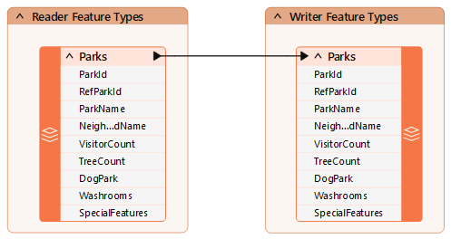

Learning Objectives
After completing this lesson, you’ll be able to:
- Explain what a dynamic workflow is in FME.
- Choose when to use a dynamic workflow based on your requirements.
- Distinguish dynamic and generic workflows.
What are Dynamic Workflows?
Dynamic workflows are a way to create "schema-less” workspaces.
Most workspaces covered elsewhere in FME training involve defining a static schema in the workspace. In other words, the source and destination schema reflect the structure of the source data (what we have) and the structure of the destination data the user requires (what we want).

A “traditional” static workspace like this is bound to a static schema.
When you press the Run button:
- The reader schema is what the workspace accepts as input.
- The writer schema is what the workspace creates as output.
The two schemas are the same by default but don’t have to be. The writer schema can be manually edited to create different outputs. However, in a static workspace, that destination schema is still defined in the workspace itself.

Schema is another term for “data model.” It’s the structure of the data. In a static workflow, the reader schema defines the data you have, and the writer schema the data you want to get. For this section, think of a schema as a trio of objects: feature types, attributes, and geometry types.
In contrast, a dynamic workspace does not make assumptions about the source or destination schema. It’s an approach to workspace design that lets the workspace handle data regardless of the schema used.

When you press the Run button:
- The workspace can accept any input, regardless of schema.
- The workspace accepts a new output schema from many sources.
- The writer schema source may be:
- Any incoming dataset
- Any external dataset
- A lookup table
- Defined within the workspace
In other words, the schemas do not need to be defined beforehand. They are fetched dynamically at "run time."
The key issue is that some FME Workbench functionality depends on knowing the schema at "author time," i.e., when you are authoring the workspace. Some functionality is only available when working with a fixed schema. For example, for a transformer to access an attribute, it must be exposed and defined in the workspace. Dynamic workspaces and their schema therefore require a different way of working, which we cover in this course and subsequent courses in the FME Form Advanced learning path.
Dynamic Readers
On the reader's side, a dynamic workspace is very similar to using Merge Parameters; feature types are given free entry to a workspace, regardless of whether they are defined there.
Data is also read regardless of attributes or geometry type.

You might think of dynamic reading as “I’ll read whatever you give me."
Dynamic Writers
The writer side of a dynamic workspace mimics the reader part; feature types are written to the destination dataset, regardless of whether they are defined in the workspace.
Additionally, all attributes and geometries get written, regardless of whether they have been predefined in a writer feature type.

Similarly, you might think of dynamic writing as “I’ll write whatever you give me.”
Common Uses for Dynamic Workflows
Dynamic workflows can be helpful in cases like:
- Applying a relatively simple data transformation to all data coming into a workflow, regardless of its schema (for example, clipping, format translations, coordinate transformations).
- When the source dataset’s schema is not predictable or well-defined.
- Performing ad hoc data transformations on many different input datasets (for example, calculating the average values for a selection of attributes)
- When long-term maintenance of the workspace is required (for example, if new feature types or attributes are added to the source data, the workspace would not need to be changed).
Generic Versus Dynamic
Understanding the differences between generic and dynamic workspaces and when to use each tool is essential.
For more details on generic workspaces, refer to Read and Write Any Data Format with Generic Mode. For more details on fanouts, see Read and Write Your Data Mid-Workflow.
This table is helpful as a reference guide:
| |
I know the format |
I don’t know the format |
|
| I know the feature types |
Static |
Generic + Static |
I know the attributes |
| I don’t know the feature types |
Fanout |
Generic + Fanout |
I know the attributes |
| I know the feature types |
Dynamic |
Generic + Dynamic |
I don’t know the attributes |
| I don’t know the feature types |
Dynamic |
Generic + Dynamic |
I don’t know the attributes |
For example, let’s assume you operate a data upload website. The data will be in a known structure (feature types) and with known attributes. However, you don’t know what format it will be. That needs a static schema (because that part is known) but with a generic reader.
On the other hand, if the format is always the same but the attributes are unknown, a dynamic workspace will be required.